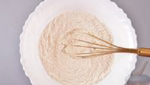
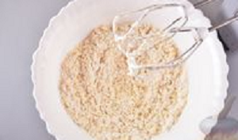
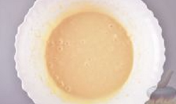
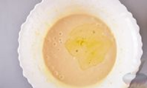

Продукти
Борошно пшеничне - 250 г Молоко – 200 мл Олія - 3 ст. ложки Яйце - 1 шт. Цукор – 2 ст. ложки Сода – 0,5 ч. ложки Лимонна кислота – 1/4 ч. ложки Сіль – 0,5 ч. ложки
Крок 1
У глибоку миску просійте борошно. Додайте сіль, цукор, лимонну кислоту та соду. Добре перемішайте сухі інгредієнти.
Крок 2
Потім вбийте яйце і збийте міксером.
Крок 3
Додайте молоко та продовжуйте збивати до однорідної консистенції.
Крок 4
Додайте олію. Збивайте ще приблизно 2 хвилини. Повинне вийти досить густе тісто.
Крок 5
Добре розігрійте сковороду. Ложкою викладайте дрібні порції тесту. Смажте оладки на мінімальному вогні приблизно по 1-2 хвилини з кожного боку. Як тільки на поверхні з'являються бульбашки, оладки можна перевертати.
Крок 6
Слідкуйте, щоб оладки не підгоріли - вони дбають досить швидко.
Крок 7
Пишні оладки на молоці готові. Подавайте оладки зі сметаною, медом, сиропом або згущеним молоком. Смачного!